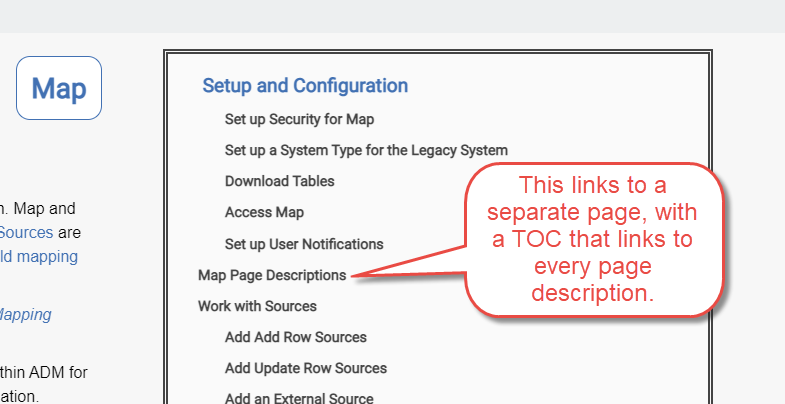

As part of adding a new topic, add it to the correct table of contents.
It's easier to add topics to the TOC if you change a default Flare setting, which sets links to cross-references by default. You can update this setting so that hyperlinks instead of cross-references are inserted by default.
Click the File menu, and select the Options button in the lower right of the menu.
Click the XML Editor tab.
Under Defaults, select Hyperlink from the Link list box.
Click Save.
To add a topic to a TOC in Flare
Open the appropriate TOC.
Drag and drop the topic from the Content Explorer pane to the appropriate location in the TOC.
Right-click the topic in the TOC and select Properties from the drop-down menu.
On the Conditional Text tab select the appropriate conditions for the topic in the TOC. Refer to Use Condition Tags for more information about how condition tags are used to generate output.
A typical TOC has three sections:
Setup and Configuration
Page Descriptions
the rest of it (what we call use cases)

To add a new Page Description topic to a TOC:
In the Content Explorer, open the topic componentname/Page_Desc/Componentname_Page_Descriptions
Add a hyperlink to the new topic in the alphabetized, bulleted list.
To add a new Setup and Config type topic to the TOCs:
Open the component Overview topic and scroll down to the Setup and Configuration section.
Add a link to the new topic to the bulleted list.
Add a link to the Set Up and Configuration section in the component TOC that displays in the right panel.
Add use case topic links below the Page Descriptions topic link. .
There are three types of topics in the SKT help.
Configuration and technical documentation
Release notes
Other topics, usually use cases
Each has a different TOC.
Add a new menu item for a new Configuration or Technical topic to two TOCs:
In the Project Organizer, select TOCs > To TopNav.
Expand the Config Docs menu item.
Add the new menu beneath the Config Docs menu item.
NOTE: This adds the new topic to the menu in the TopNav.
In the Project Organizer, select TOCs > Config Docs.
Expand the Config Docs menu item
Add the new menu beneath the Config Docs menu item.
NOTE:This adds the new topic to the right side menu that displays on all topics of this type (controlled through the master page).
A new Release Notes topic must be added for each month. Refer to Add Month to the Drop-down List on the What's New Page for updating this TOC.
When you add any other type of topic, add a new menu item to the SKT TOC.
TOCs in the Installation manual project are based on the manual type. Add a new menu item for new topics to the correct TOC.
If you are adding a supplemental section, add the new menu item beneath the Supplemental Sections heading for both the InstallHTML5 and UpgradeHTML5 TOCs. Add a new men item to the Appendices TOC as well.